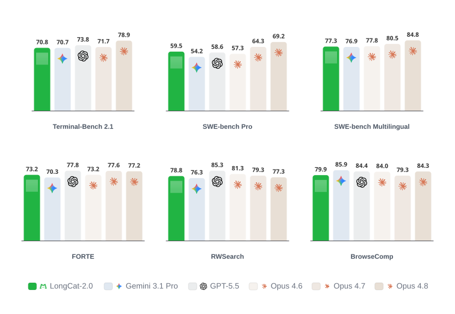

LongCat-2.0 — 1.6T MoE、国产 ASIC 与长时程 Agent

一页判断
| 层次 | LongCat-2.0 的做法 | 我的判断 |
|---|---|---|
| Scale | 1.6T total / 约 48B active | 相比 Flash 明显扩容，但仍保持低激活 MoE 方向 |
| Pre-training | 35T+ tokens；百万 accelerator-days | 规模跃迁之外，国产 ASIC 稳定性才是主叙事 |
| Long context | 数百 B 的 1M-context 数据 + LSA | 不只做 RoPE 外推，而是同时解决 sparse indexing 与 HBM 访问 |
| Sparse capacity | 135B N-gram Embedding | 把 Flash-Lite 的“embedding 比继续加专家更划算”升级到万亿模型 |
| Decode | 3-step MTP 与 LSA 共享索引 | 架构直接为 rollout / speculative decoding 服务 |
| Post-training | coding、search、tool use、harness adaptation | 官方披露评测，未披露完整 RL recipe |
从 LongCat-Flash 到 2.0：不是简单放大
Flash 系列建立了 ScMoE、Zero-Computation Experts 和低推理成本；Flash-Lite 证明 N-gram Embedding 是 MoE 之外的第二条 sparse scaling 轴；Thinking-2601 又把真实工具环境和 Robust RL 接入同一基座。2.0 把这些经验重新组合：
- 总参数从约 560B 上升到官方口径 1.6T，单 token 激活约 48B；
- N-gram Embedding 单独占 135B 参数，不与 MoE experts 争抢每 token FLOPs；
- 768 个 routed experts 写入公开配置，延续超稀疏 MoE；
- attention 不再只依赖 MLA/全注意力，而是引入 LongCat Sparse Attention；
- 训练与大规模部署都迁到 AI ASIC superpods。
LongCat Sparse Attention：同时修索引与访存
官方把目标写得很具体：DeepSeek Sparse Attention 一类方法仍面临两类工程问题——索引器的输出可能不连续，随机挑出的 KV token 会造成碎片化 HBM 访问；索引器本身如果对所有候选做评分，也可能重新引入接近二次的成本。
LSA 用三个正交策略处理：
- Streaming-aware Indexing (SI)：把固定 selection budget 分成连续 streaming blocks 与动态随机选择，尽量把碎片访存改成连续 HBM 读取；
- Cross-Layer Indexing (CLI)：利用相邻层 attention saliency 的稳定性，一个 indexer 结果服务连续多层；训练阶段用 cross-layer distillation 让共享索引成立；
- Hierarchical Indexing (HI)：先做 block-level coarse recall，再在候选块内 fine-grained selection，缩小每个 query 的精排集合。
这三种策略继续扩展到 3-step MTP：target model 每两层共享一次索引，三个 draft steps 再共享一次索引。也就是说，MTP 没有被当作部署外挂，而是和 sparse attention 共用检索路径。
N-gram Embedding：135B 参数放在“正交稀疏轴”
LongCat-Flash-Lite 的核心发现是，当 MoE experts 数量超过 sweet spot 后，继续加专家的边际收益开始下降；N-gram Embedding 的 lookup 近似 O(1)，不增加 all-to-all 通信，因此更适合继续扩稀疏容量。
2.0 把这一方法扩到 135B 参数，并保留两条约束：MoE sparsity 必须已经跨过 sweet spot；N-gram Embedding 占总参数的比例又不能无限上升。这里不能把 135B 简单理解为“白送参数”，因为它仍增加模型存储和权重带宽，只是对每 token FLOPs 和专家通信更友好。
35T+ tokens：国产 ASIC 上的完整 frontier-scale run
官方材料声称，完整训练与大规模部署均在 AI ASIC superpods 上完成，预训练累计超过 35T tokens、百万 accelerator-days，过程中没有 rollback 或不可恢复的 loss spike。
这项主张的重要性不在芯片品牌，而在训练系统必须同时解决：
- 超大 MoE expert parallelism 与 all-to-all；
- LSA / MTP 的自定义算子与数值一致性；
- checkpoint、故障恢复和超长 run 的稳定性；
- 推理端 GPU 与 NPU 双平台部署。
但官方没有公开芯片型号、集群拓扑、MFU、故障率和详细 loss curve，因此目前只能把它视为可核对的发布主张，不能据此比较不同硬件的成本效率。
1M context：训练数据比“窗口数字”更重要
Model Card 明确写入数百 B tokens 的 1M-context 数据。公开配置同时包含 YaRN scaling，并把 original_max_position_embeddings 设为 8192；仓库的 max_position_embeddings 字段为 262144。这个组合说明实际可用窗口依赖部署实现与 scaling 配置，不能只看一个 JSON 字段判断。
对于 Agent，1M 训练的真正价值不是塞一篇超长文档，而是容纳 repo、日志、工具结果、测试反馈与多轮计划。LSA 只有在长线程的召回质量和执行连续性上成立，才算完成任务；单纯 long-context needle accuracy 不够。
Agent 与 coding 评测
官方使用统一内部 harness 评测，并明确以 * 标注从其他模型官方报告引用的分数。选取与定位最相关的指标：
| 维度 | LongCat-2.0 | 阅读结论 |
|---|---|---|
| Terminal-Bench 2.1 | 70.8 | 终端 Agent 达到公开 frontier 区间 |
| SWE-bench Pro | 59.5 | repo-level 软件工程是强项 |
| SWE-bench Multilingual | 77.3 | 多语言代码迁移较强 |
| FORTE | 73.2 | 长时程 general agent 接近前沿模型 |
| BrowseComp | 79.9 | 搜索能力强，但并非表内最高 |
| RWSearch | 78.8 | 真实世界检索超过多项对照 |
| IFEval | 90.0 | 指令遵循稳健，但弱于部分闭源旗舰 |
| GPQA-diamond | 88.9 | 基础推理很强，仍落后表内最强模型 |
官方还说明模型深度适配 Claude Code、OpenClaw 与 Hermes。这里应区分两件事：harness compatibility 是 prompt/tool protocol 适配；benchmark capability 是模型实际完成任务的能力。前者不能自动推出后者。
如何验收 LongCat-2.0
- 长上下文按 128K / 256K / 512K / 1M 分桶，同时记录准确率、prefill latency、decode TPS 与显存；
- 比较 LSA 关闭、只开 SI、SI+CLI、完整 SI+CLI+HI，分别看召回与吞吐；
- MTP 同时报告 acceptance length、端到端 speedup 和不同任务熵下的退化；
- Agent 评测固定 harness 版本、工具 schema、timeout、最大 step 与上下文管理策略；
- 国产 ASIC 主张需要补充硬件型号、拓扑、MFU、故障统计和恢复成本；
- N-gram Embedding 消融必须用等参数纯 MoE、等激活参数和等训练 FLOPs 三种控制组。